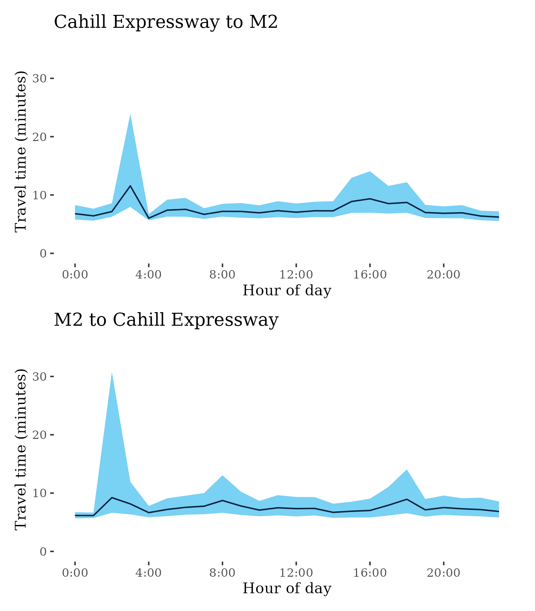

Congestion Report 2021
Congestion Report 2021Sydney
The figure below shows all 22 selected Sydney freight vehicle routes and an index of the median excess travel time ratio (METR) – i.e. the ratio of median travel time to best (shortest) travel time – across each route.
The figure below shows changes in the METRs and MEURs between 2020 and 2021 across each of the 22 selected Sydney freight vehicle routes. Whilst the city-wide measure rose many routes experienced declines, which may be the result of differing lockdown conditions across the city.
Decreases in travel time uncertainty rose on average but inconsistently. Large decreases on the M1 (North) are an artifact of the data process.
Many Sydney routes showed improvements in both measures during the third quarter of 2020 when there were renewed lockdowns.
12 – A9 to M7/M7 to A9
This route follows surface routes in South Western Sydney from the A9 at Narellan to Casula where the Hume Motorway branches into the M5 and M7. It serves areas adjacent to the Western Sydney Airport currently under construction and some light industrial areas. It runs predominantly along Camden Valley Way.
| Direction | Best travel time | Longest median travel time | METR | Least uncertainty range | Most uncertainty range | MEUR | Distance |
|---|---|---|---|---|---|---|---|
| A9 to M7 | 0:15:54 | 0:19:55 | 1.094 | 0:05:02 | 0:15:05 | 1.541 | 17.12 |
| M7 to A9 | 0:16:00 | 0:20:26 | 1.112 | 0:04:46 | 0:15:11 | 1.743 | 17.1 |
The best median travel times for journeys from the A9 to the M7 were 16 minutes at 5am and the lowest uncertainty was at 5am with an interquartile range of 5 minutes. The longest median travel times were 20 minutes at 1am and the greatest uncertainty were at 8am with an interquartile range of 15 minutes, where there was also a morning peak in travel times. Delays were concentrated in the Norther part of the route near the M7.
The best median travel times and lowest uncertainty for journeys from the M7 to the A9 were at 5am with a median travel time of 16 minutes and an interquartile range of 5 minutes. The longest median travel times and greatest uncertainty were at 4pm with a median of 20 minutes and an interquartile range of 15 minutes. Delays in this peak were concentrated near the far South of the route.
A1 – Artarmon to Wahroonga/Wahroonga to Artarmon
This route follows the Pacific Highway from the Gore Hill Expressway at Artarmon and the M1 Motorway at Wahroonga. It, along with NorthConnex, is one of two routes connecting the orbital road network to the Pacific Motorway (M1) and the north of the state and Queensland. It also services most of the Upper North Shore of Sydney.
| Direction | Best travel time | Longest median travel time | METR | Least uncertainty range | Most uncertainty range | MEUR | Distance |
|---|---|---|---|---|---|---|---|
| Artarmon to Wahroonga | 0:15:19 | 0:21:20 | 1.21 | 0:04:44 | 0:16:35 | 2.104 | 13.5 |
| Wahroonga to Artarmon | 0:15:35 | 0:20:13 | 1.135 | 0:05:18 | 0:11:56 | 1.574 | 13.48 |
The best median travel times and least uncertainty for journeys from Artarmon to Wahroonga were at midnight with a median travel time of 15 minutes and an interquartile range of 5 minutes. The longest median travel times were 21 minutes at 8am and the greatest uncertainty were at 4pm with an interquartile range of 21 minutes. There was also a “third peak” at 2am. Delays were spread throughout the route.
The best median travel times and least uncertainty for journeys from Wahroonga to Artarmon were at 10pm with a median travel time of 16 minutes and an interquartile range of 5 minutes. The longest median travel times and greatest uncertainty were at 8am with a median of 20 minutes and an interquartile range of 20 minutes. Unlike the other direction there was no afternoon peak.
A22 – Glebe to Liverpool/Liverpool to Glebe
This route follows surface roads between the inner city and the south west of Sydney via Ashfield and important logistics sites around Chullora. It is known by various names along its extent, including Parramatta Road, Liverpool Road and also as the Hume Highway for most of its length.
| Direction | Best travel time | Longest median travel time | METR | Least uncertainty range | Most uncertainty range | MEUR | Distance |
|---|---|---|---|---|---|---|---|
| Glebe to Liverpool | 0:38:39 | 0:47:18 | 1.088 | 0:22:36 | 0:38:52 | 1.266 | 29.24 |
| Liverpool to Glebe | 0:38:06 | 0:45:45 | 1.103 | 0:21:36 | 0:37:28 | 1.308 | 29.27 |
The best median travel times and lowest uncertainty for journeys from Glebe to Liverpool were at 10pm with a median travel time of 39 minutes and an interquartile range of 23 minutes. The longest median travel times and greatest uncertainty were at 4pm with a median of 47 minutes and an interquartile range of 38 minutes.
The best travel times and lowest uncertainty travelling from Liverpool to Glebe were at 4am and 5am with a median travel time of 38 minutes and an interquartile range of 22 minutes. The longest median travel times and greatest uncertainty were at 5pm with a median of 46 minutes and an interquartile range of 38 minutes.
As in 2020 delays were notable around Parramatta Road, Ashfield and Canley Vale. Congestion was noticeable lower during the third quarter.
A28 – Casula to M2 Motorway / M2 Motorway to Casula
This surface route traverses much of Western Sydney, from the intersection of the M2 and Pennant Hills Road to the intersection of the Hume Motorway and Camden Valley Way. It passes Wentworthville, Fairfield West, Liverpool and Casula and crosses the A44, M4 and M5 routes.
| Direction | Best travel time | Longest median travel time | METR | Least uncertainty range | Most uncertainty range | MEUR | Distance |
|---|---|---|---|---|---|---|---|
| Casula to M2 Motorway | 0:38:16 | 0:46:47 | 1.107 | 0:17:06 | 0:36:49 | 1.533 | 32.77 |
| M2 Motorway to Casula | 0:38:10 | 0:47:00 | 1.073 | 0:16:33 | 0:41:12 | 1.468 | 32.93 |
The best travel times and lowest uncertainty travelling from Casula to the M2 Motorway were at 11pm and 10pm with a median travel time of 38 minutes and an interquartile range of 17 minutes. The longest median travel times and greatest uncertainty were at 5pm with a median of 47 minutes and an interquartile range of 37 minutes.
The best travel times and lowest uncertainty travelling from the M2 Motorway to Casula were at 9pm and 10pm with a median travel time of 38 minutes and an interquartile range of 17 minutes. The longest median travel times were 47 minutes at 5pm and the greatest uncertainty were at 4pm with an interquartile range of 41 minutes.
Over all this was very similar to 2020 with delays prominent at Granville although congestion was lower in the third quarter.
A3 – Blakehurst to Pymble / Pymble to Blakehurst
This route traverses Sydney from the intersection of Ryde Road and the Pacific Highway at Pymble to the Princes Highway at Blakehurst. It passes through Ryde, Strathfield, Roselands and Hurstville along its extent. It intersects with a number of other routes in this report including the M2, M4 and M5 motorways and the A34, A22 and A40.

| Direction | Best travel time | Longest median travel time | METR | Least uncertainty range | Most uncertainty range | MEUR | Distance |
|---|---|---|---|---|---|---|---|
| Blakehurst to Pymble | 0:36:24 | 0:45:33 | 1.094 | 0:15:35 | 0:34:12 | 1.44 | 30.5 |
| Pymble to Blakehurst | 0:36:17 | 0:52:40 | 1.123 | 0:16:50 | 0:41:11 | 1.418 | 30.79 |
The best median travel times and lowest uncertainty for journeys from Blakehurst to Pymble were at 5am with a median travel time of 36 minutes and an interquartile range of 16 minutes. The longest median travel times were 46 minutes at 2am and the greatest uncertainty were at 5pm with an interquartile range of 34 minutes.
The best travel times and lowest uncertainty travelling from Pymble to Blakehurst were at 1pm and 6am with a median travel time of 36 minutes and an interquartile range of 17 minutes. The longest median travel times were at 4am with a median of 53 minutes and the greatest uncertainty at 3am with an interquartile range of 41 minutes.
The third peaks in both directions were not apparent in 2020 however the morning and afternoon peaks, whilst similar, were more subdued.
A34 – Liverpool to Newtown / Newtown to Liverpool
This route follows a path almost parallel but more southerly to the A22, passing Marrickville, Punchbowl and Milperra. It is known by various names, including Canterbury Road and Milperra Road along its length.
| Direction | Best travel time | Longest median travel time | METR | Least uncertainty range | Most uncertainty range | MEUR | Distance |
|---|---|---|---|---|---|---|---|
| Liverpool to Newtown | 0:31:52 | 0:43:17 | 1.184 | 0:15:56 | 0:46:45 | 1.825 | 26.08 |
| Newtown to Liverpool | 0:31:28 | 0:43:34 | 1.223 | 0:16:24 | 0:47:03 | 1.964 | 26.74 |
The best median travel times and lowest uncertainty for journeys from Liverpool to Newtown were at 4am with a median travel time of 32 minutes and an interquartile range of 16 minutes. The longest median travel times were 43 minutes at 2pm and the greatest uncertainty were at 4pm with an interquartile range of 47 minutes.
The best median travel times for journeys from Newtown to Liverpool were 31 minutes at 4am and the lowest uncertainty was at 4am with an interquartile range of 16 minutes. The longest median travel times were at 3pm with a median of 44 minutes and the greatest uncertainty at 4pm with an interquartile range of 47 minutes.
A36 – Broadway to Georges River / Georges River to Broadway
This route travels south from the inner city at Broadway (Glebe), skirting industrial areas at Alexandria and passing through the St George region before meeting the A3 at Blakehurst. For most of its length it is known as the Princes Highway.

| Direction | Best travel time | Longest median travel time | METR | Least uncertainty range | Most uncertainty range | MEUR | Distance |
|---|---|---|---|---|---|---|---|
| Broadway to Georges River | 0:19:28 | 0:37:57 | 1.315 | 0:06:58 | 0:20:57 | 2.089 | 16.48 |
| Georges River to Broadway | 0:20:09 | 0:32:07 | 1.342 | 0:08:34 | 0:27:54 | 2.136 | 16.51 |
The best median travel times for journeys from Broadway to Georges River were 19 minutes at 4am and the lowest uncertainty was at 4am with an interquartile range of 7 minutes. The longest median travel times were 38 minutes at 2am and the greatest uncertainty were at 5pm with an interquartile range of 20 minutes
The best median travel times and least uncertainty for journeys from Georges River to Broadway were at 4am with a median travel time of 20 minutes and an interquartile range of 8.5 minutes. The longest median travel times were at 8am with a median of 32 minutes and the greatest uncertainty at 10am with an interquartile range of 28 minutes.
A38 – Dee Why to Roseville/Roseville to Dee Why
This route connects the Upper North Shore and Northern Beaches regions of Sydney, from the Pacific Highway (A1) at Roseville to Pittwater Rd (A8) at Dee Why.
| Direction | Best travel time | Longest median travel time | METR | Least uncertainty range | Most uncertainty range | MEUR | Distance |
|---|---|---|---|---|---|---|---|
| Dee Why to Roseville | 0:13:40 | 0:18:28 | 1.081 | 0:04:38 | 0:08:57 | 1.378 | 12.10 |
| Roseville to Dee Why | 0:14:54 | 0:18:45 | 1.091 | 0:06:38 | 0:10:42 | 1.235 | 12.12 |
The best median travel times and lowest uncertainty for journeys from Dee Why to Roseville were at 11am with a median travel time of 14 minutes and an interquartile range of 5 minutes. The longest median travel times were at 3am with a median of 18 minutes and the greatest uncertainty at 8am with an interquartile range of 9 minutes.
The best median travel times and lowest uncertainty for journeys from Roseville to Dee Why were at 5am with a median travel time of 15 minutes and an interquartile range of 7 minutes. The longest median travel times and greatest uncertainty were at 3am with a median of 19 minutes and an interquartile range of 11 minutes.
A40 – Baulkham Hills to Rozelle / Rozelle to Baulkham Hills
This route connects the inner city (Rozelle) and the north-west of Sydney passing through Gladesville, Rydalmere and Toongabbie along its path. It is known at different points as Victoria Road, James Ruse Drive and Old Windsor Road.
| Direction | Best travel time | Longest median travel time | METR | Least uncertainty range | Most uncertainty range | MEUR | Distance |
|---|---|---|---|---|---|---|---|
| Baulkham Hills to Rozelle | 0:28:48 | 0:39:13 | 1.232 | 0:09:29 | 0:26:08 | 1.98 | 27.82 |
| Rozelle to Baulkham Hills | 0:31:33 | 0:40:43 | 1.127 | 0:11:07 | 0:34:23 | 1.751 | 28.12 |
The best median travel times for journeys from Baulkham Hills to Rozelle were 29 minutes at 1am and the lowest uncertainty was at 1am with an interquartile range of 9.5 minutes. The longest median travel times were 39 minutes at 8am and the greatest uncertainty were at 5pm with an interquartile range of 26 minutes.
The best median travel times for journeys from Rozelle to Baulkham Hills were 32 minutes at 10pm and the lowest uncertainty was at 10pm with an interquartile range of 11 minutes. The longest median travel times and greatest uncertainty were at 5pm with a median of 41 minutes and an interquartile range of 34 minutes.
A44 – Camperdown to Strathfield / Strathfield to Camperdown
This route runs from the former end of the M4 Motorway at Strathfield to Camperdown in the inner city and services the Inner West Region of Sydney.
| Direction | Best travel time | Longest median travel time | METR | Least uncertainty range | Most uncertainty range | MEUR | Distance |
|---|---|---|---|---|---|---|---|
| Camperdown to Strathfield | 0:12:13 | 0:18:00 | 1.21 | 0:03:52 | 0:17:11 | 2.441 | 10.21 |
| Strathfield to Camperdown | 0:20:51 | 0:31:37 | 1.287 | 0:04:41 | 0:26:58 | 3.322 | 19.10 |
The best median travel times and lowest uncertainty for journeys from Camperdown to Strathfield were at 4am with a median travel time of 12 minutes and an interquartile range of 4 minutes. The longest median travel times and greatest uncertainty were at 4pm with a median of 18 minutes and an interquartile range of 17 minutes.
The best median travel times for journeys from Strathfield to Camperdown were 21 minutes at 2am and the lowest uncertainty was at 2am with an interquartile range of 5 minutes. The longest median travel times and greatest uncertainty were at 8am with a median of 32 minutes and an interquartile range of 27 minutes.
A6 – Carlingford to Padstow / Padstow to Carlingford
This route traverses Sydney linking Carlingford and Padstow, and roughly parallels the A3 route to the west. It passes through Rydalmere, Lidcombe, Bankstown and the Chullora precinct. This route intersects with the M2, M4 and M7 motorways.

| Direction | Best travel time | Longest median travel time | METR | Least uncertainty range | Most uncertainty range | MEUR | Distance |
|---|---|---|---|---|---|---|---|
| Carlingford to Padstow | 0:23:30 | 0:32:40 | 1.096 | 0:11:29 | 0:29:25 | 1.39 | 19.95 |
| Padstow to Carlingford | 0:25:00 | 0:34:35 | 1.108 | 0:13:56 | 0:28:49 | 1.375 | 20.13 |
The best travel times and lowest uncertainty travelling from Carlingford to Padstow were at 8pm and 9pm with a median travel time of 23.5 minutes and an interquartile range of 11.5 minutes. The longest median travel times and greatest uncertainty were at 3am with a median of 33 minutes and an interquartile range of 29.5 minutes.
The best median travel times and lowest uncertainty for journeys from Padstow to Carlingford were at 4am with a median travel time of 25 minutes and an interquartile range of 14 minutes. The longest median travel times and greatest uncertainty were at 3am with a median of 35 minutes and an interquartile range of 29 minutes.
A8 – Dee Why to M1 / M1 to Dee Why
This route connects the Northern Beaches to the Gore Hill Expressway (and the orbital network) until it meets Warringah Road (A8) at Dee Why. It services suburbs including Neutral Bay, Balgowlah and Manly and is known by names including Military Road, Spit Road, Burnt Bridge Deviation and Condamine Street.
| Direction | Best travel time | Longest median travel time | METR | Least uncertainty range | Most uncertainty range | MEUR | Distance |
|---|---|---|---|---|---|---|---|
| Dee Why to M1 | 0:17:09 | 0:26:21 | 1.157 | 0:07:38 | 0:24:49 | 1.638 | 12.26 |
| M1 to Dee Why | 0:16:15 | 0:24:11 | 1.24 | 0:06:46 | 0:18:38 | 1.896 | 12.23 |
The best travel times and lowest uncertainty travelling from Dee Why to the M1 were at 6am and 9pm with a median travel time of 17 minutes and an interquartile range of 8 minutes. The longest median travel times and greatest uncertainty were at 2am with a median of 26 minutes and an interquartile range of 25 minutes.
The best median travel times and least uncertainty for journeys from the M1 to Dee Why were at 4am with a median travel time of 16 minutes and an interquartile range of 7 minutes. The longest median travel times and greatest uncertainty were at 2am with a median of 24 minutes and an interquartile range of 19 minutes.
A9 – Hume Freeway to M4 / M4 to Hume Freeway
This route skirts Western Sydney from the Hume Motorway at Mount Annan to the Great Western Highway (M4) at Glenmore Park. It services areas adjacent to the new Western Sydney Airport and is also known as the Northern Road.
| Direction | Best travel time | Longest median travel time | METR | Least uncertainty range | Most uncertainty range | MEUR | Distance |
|---|---|---|---|---|---|---|---|
| Hume Freeway to M4 | 0:32:40 | 0:37:18 | 1.085 | 0:07:22 | 0:16:26 | 1.722 | 37.36 |
| M4 to Hume Freeway | 0:34:02 | 0:41:51 | 1.069 | 0:09:11 | 0:25:50 | 1.54 | 37.40 |
The best median travel times and lowest uncertainty for journeys from Hume Freeway to the M4 were at 3am with a median travel time of 33 minutes and an interquartile range of 7 minutes. The longest median travel times and greatest uncertainty were at midnight with a median of 37 minutes and an interquartile range of 16 minutes.
The best travel times and lowest uncertainty travelling from the M4 to Hume Freeway were at 10pm and 11pm with a median travel time of 34 minutes and an interquartile range of 9 minutes. The longest median travel times and greatest uncertainty were at 2am with a median of 42 minutes and an interquartile range of 26 minutes.

M1 (North) – Cahill Expressway to M2 / M2 to Cahill Expressway
This route links the Sydney CBD to the Lane Cove Tunnel at the beginning of the M2 via the Sydney Harbour Tunnel, the Warringah Freeway and the Gore Hill Freeway. It is a major commuter route but somewhat less important for freight.

| Direction | Best travel time | Longest median travel time | METR | Least uncertainty range | Most uncertainty range | MEUR | Distance |
|---|---|---|---|---|---|---|---|
| Cahill Expressway to M2 | 0:06:01 | 0:11:34 | 1.236 | 0:01:03 | 0:15:56 | 3.266 | 7.28 |
| M2 to Cahill Expressway | 0:06:09 | 0:09:13 | 1.207 | 0:00:56 | 0:24:09 | 4.601 | 7.28 |
The best median travel times and lowest uncertainty for journeys from Cahill Expressway to the M2 were at 4am with a median travel time of 6 minutes and an interquartile range of just over 1 minute. The longest median travel times and greatest uncertainty were at 3am with a median of 12 minutes and an interquartile range of 16 minutes.
The best median travel times for journeys from the M2 to Cahill Expressway were 6 minutes at 1am and the lowest uncertainty was at 1am with an interquartile range of just under 1 minute. The longest median travel times and greatest uncertainty were at 2am with a median of 9 minutes and an interquartile range of 24 minutes.

M1 (South) – Cahill Expressway to M5 / M5 to Cahill Expressway
This route travels between the east of the Sydney CBD and M5 near Sydney Airport via the Eastern Distributor, South Dowling Street and General Holmes Drive.

| Direction | Best travel time | Longest median travel time | METR | Least uncertainty range | Most uncertainty range | MEUR | Distance |
|---|---|---|---|---|---|---|---|
| Cahill Expressway to M5 | 0:10:04 | 0:12:11 | 1.091 | 0:01:49 | 0:09:20 | 2.262 | 12.11 |
| M5 to Cahill Expressway | 0:10:11 | 0:14:40 | 1.101 | 0:01:39 | 0:11:54 | 2.199 | 12.00 |
The best median travel times and least uncertainty for journeys from Cahill Expressway to the M5 were at 9pm with a median travel time of 10 minutes and an interquartile range of 2 minutes. The longest median travel times and greatest uncertainty were at 5pm with a median of 12 minutes and an interquartile range of 9 minutes.
The best median travel times and least uncertainty for journeys from the M5 to Cahill Expressway were at 8pm with a median travel time of 10 minutes and an interquartile range of 2 minutes. The longest median travel times and greatest uncertainty were at 8am with a median of 15 minutes and an interquartile range of 12 minutes.
M2 – M1 to M7 / M7 to M1
This route runs between the Hills District and Lane Cove connecting the M7 and M1 via the M2 motorway and the Lane Cove Tunnel. It is an important route for both commuter and freight traffic.
| Direction | Best travel time | Longest median travel time | METR | Least uncertainty range | Most uncertainty range | MEUR | Distance |
|---|---|---|---|---|---|---|---|
| M1 to M7 | 0:17:16 | 0:22:47 | 1.073 | 0:03:26 | 0:17:51 | 2.075 | 24.50 |
| M7 to M1 | 0:16:43 | 0:20:32 | 1.076 | 0:02:59 | 0:17:23 | 2.048 | 24.30 |
The best median travel times and least uncertainty for journeys from the M1 to M7 were at 11pm with a median travel time of 17 minutes and an interquartile range of 3.5 minutes. The longest median travel times were at 5pm with a median of 23 minutes and the greatest uncertainty at 4pm with an interquartile range of 18 minutes.
The best median travel times and least uncertainty for journeys from the M7 to M1 were at 4pm with a median travel time of 17 minutes and an interquartile range of 3 minutes. The longest median travel times and greatest uncertainty were at 8am with a median of 21 minutes and an interquartile range of 17 minutes.
M4 – Glenbrook to Strathfield / Strathfield to Glenbrook
This route connects the A32 at Glenbrook with the former terminus of the M4 at Strathfield. It intersects with several north–south routes presented in this report, including the M7, A28 and A6. It does not incorporate Parramatta Road or the City West Link, nor the M4 East tunnel that opened in July 2020.
| Direction | Best travel time | Longest median travel time | METR | Least uncertainty range | Most uncertainty range | MEUR | Distance |
|---|---|---|---|---|---|---|---|
| Glenbrook to Strathfield | 0:31:33 | 0:33:00 | 1.02 | 0:04:51 | 0:07:56 | 1.256 | 45.82 |
| Strathfield to Glenbrook | 0:31:09 | 0:34:32 | 1.025 | 0:04:50 | 0:12:29 | 1.334 | 45.78 |
The best median travel times for journeys from Glenbrook to Strathfield were 32 minutes at 4am and the lowest uncertainty was at 4am with an interquartile range of 5 minutes. The longest median travel times and greatest uncertainty were at 6am with a median of 33 minutes and an interquartile range of 8 minutes.
The best median travel times and lowest uncertainty for journeys from Strathfield to Glenbrook were at 5am with a median travel time of 31 minutes and an interquartile range of 5 minutes. The longest median travel times and greatest uncertainty were at 5pm with a median of 35 minutes and an interquartile range of 12.5 minutes.
M4 (East)-A4 – Cahill Expressway to Strathfield/Strathfield to Cahill Expressway
This route follows the M4 tunnel from the former terminus of the M4 Motorway at Strathfield to Ashfield and then the A4 (also known as the City West Link) to the Cahill Expressway near the Sydney CBD. It extends the M4 route with roads that were not built in 2019 and has been included as a separate route so data remains consistent.
| Direction | Best travel time | Longest median travel time | METR | Least uncertainty range | Most uncertainty range | MEUR | Distance |
|---|---|---|---|---|---|---|---|
| Cahill Expressway to Strathfield | 0:14:35 | 0:20:15 | 1.118 | 0:02:53 | 0:16:27 | 2.532 | 14.84 |
| Strathfield to Cahill Expressway | 0:14:12 | 0:18:30 | 1.132 | 0:02:03 | 0:17:15 | 3.779 | 14.63 |
The best median travel times and least uncertainty for journeys from the Cahill Expressway to Strathfield were at 1am with a median travel time of 15 minutes and an interquartile range of 3 minutes. The longest median travel times and greatest uncertainty were at 4pm with a median of 20 minutes and an interquartile range of 16.5 minutes.
The best median travel times for journeys from Strathfield to the Cahill Expressway were 14 minutes at 4am and the lowest uncertainty was at 4am with an interquartile range of 2 minutes. The longest median travel times were at 8am with a median of 18.5 minutes and the greatest uncertainty at 5pm with an interquartile range of 17 minutes.
M5 – Hume Motorway to M1 / M1 to Hume Motorway
This route follows the M5 Motorway between the Hume Motorway at Casula and the M1 at General Holmes Drive. It is a major commuter route and also services freight traffic in areas around the Airport and Port Botany.

| Direction | Best travel time | Longest median travel time | METR | Least uncertainty range | Most uncertainty range | MEUR | Distance |
|---|---|---|---|---|---|---|---|
| Hume Motorway to M1 | 0:20:38 | 0:23:13 | 1.045 | 0:03:25 | 0:11:13 | 2.032 | 29.35 |
| M1 to Hume Motorway | 0:20:32 | 0:31:39 | 1.122 | 0:03:28 | 0:27:46 | 2.536 | 29.25 |
The best median travel times and least uncertainty for journeys from Hume Motorway to the M1 were at 4am with a median travel time of 21 minutes and an interquartile range of 3.5 minutes. The longest median travel times were 23 minutes at 6am and the greatest uncertainty were at 7am with an interquartile range of 11 minutes
The best median travel times and lowest uncertainty for journeys from the M1 to Hume Motorway were at 7pm with a median travel time of 21 minutes and an interquartile range of 3.5 minutes. The longest median travel times and greatest uncertainty were at 5pm with a median of 32 minutes and an interquartile range of 28 minutes.
M7 – M2 to M5 / M5 to M2
This route follows the M7 Motorway between its confluence with the M2 in the Hills District and Hume Motorway at Casula, skirting much of Western Sydney and crossing the M4 Motorway. It is a major route for intercity freight including trips that do not start or end in Sydney.

| Direction | Best travel time | Longest median travel time | METR | Least uncertainty range | Most uncertainty range | MEUR | Distance |
|---|---|---|---|---|---|---|---|
| M2 to M5 | 0:24:12 | 0:34:50 | 1.063 | 0:02:46 | 0:23:34 | 2.483 | 38.38 |
| M5 to M2 | 0:24:03 | 0:31:03 | 1.065 | 0:02:47 | 0:19:59 | 2.614 | 38.52 |
The best travel times and lowest uncertainty travelling from the M2 to the M5 were at 8pm and 5am with a median travel time of 24 minutes and an interquartile range of 3 minutes. The longest median travel times and greatest uncertainty were at 4pm with a median of 35 minutes and an interquartile range of 23.5 minutes.
The best median travel times and least uncertainty for journeys from the M5 to the M2 were at midnight with a median travel time of 24 minutes and an interquartile range of 3 minutes. The longest median travel times and greatest uncertainty were at 6am with a median of 31 minutes and an interquartile range of 20 minutes.
M8 – M5 to Mascot/Mascot to M5
This route follows the recently built M8 tunnel connecting the M5 with Inner Southern Sydney. It services light industrial areas in the vicinity of the port and airport.
| Direction | Best travel time | Longest median travel time | METR | Least uncertainty range | Most uncertainty range | MEUR | Distance |
|---|---|---|---|---|---|---|---|
| M5 to Mascot | 0:09:32 | 0:13:08 | 1.128 | 0:05:28 | 0:12:05 | 1.608 | 10.99 |
| Mascot to M5 | 0:09:01 | 0:09:47 | 1.044 | 0:01:11 | 0:02:04 | 1.335 | 10.88 |
The best median travel times for journeys from the M5 to Mascot were 9.5 minutes at 4pm and the lowest uncertainty was at 4pm with an interquartile range of 5.5 minutes. The longest median travel times were 13 minutes at 7am and the greatest uncertainty were at midnight with an interquartile range of 12 minutes
The best travel times and lowest uncertainty travelling from Mascot to the M5 were at 9pm and 4pm with a median travel time of 9 minutes and an interquartile range of 71 seconds. The longest median travel times were at 11am with a median of 10 minutes and the greatest uncertainty at 8am with an interquartile range of 2 minutes.
NorthConnex-M1 – Brooklyn to M2 / M2 to Brooklyn
This route connects the Sydney orbital network to the Pacific Motorway (M1), and connects Sydney to northern NSW and Queensland. It starts at the M2 Motorway at Carlingford and uses the recently built NorthConnex tunnel to the start of the M1 Motorway (commonly referred to as the F3) at Wahroonga and continues until the Hawkesbury River at Brooklyn.
| Direction | Best travel time | Longest median travel time | METR | Least uncertainty range | Most uncertainty range | MEUR | Distance |
|---|---|---|---|---|---|---|---|
| NorthConnex-M1 - Brooklyn to M2 | 0:21:17 | 0:22:23 | 1.022 | 0:02:31 | 0:10:00 | 2.143 | 31.37 |
| NorthConnex-M1 - M2 to Brooklyn | 0:22:00 | 0:24:13 | 1.034 | 0:05:11 | 0:18:10 | 1.812 | 31.67 |
The best travel times and lowest uncertainty travelling from Brooklyn to the M2 were at 11am and 8am with a median travel time of 21 minutes and an interquartile range of 2.5 minutes. The longest median travel times were at 4pm with a median of 22 minutes and the greatest uncertainty at 5pm with an interquartile range of 10 minutes.
The best median travel times and lowest uncertainty for journeys from the M2 to Brooklyn were at 4am with a median travel time of 22 minutes and an interquartile range of 5 minutes. The longest median travel times and greatest uncertainty were at 4pm with a median of 24 minutes and an interquartile range of 18 minutes.